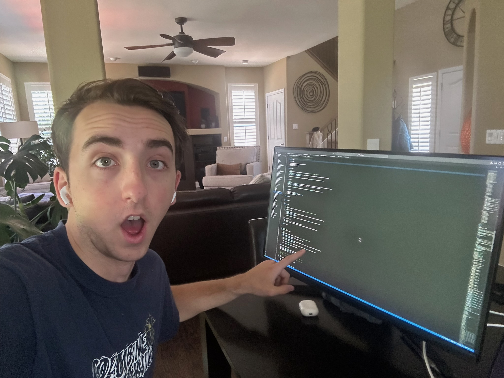

About me
I am a fourth-year computer science student. I like cooking, movies, running, writing, climbing, and talking with people about ideas. I also enjoy coding, particularly when it related to statistics and finance. #riskManagementIsFun
I care about design and innovation, and I am interested in how interfaces can work well for more people. This portal collects my labs and final project for Universal Design.
